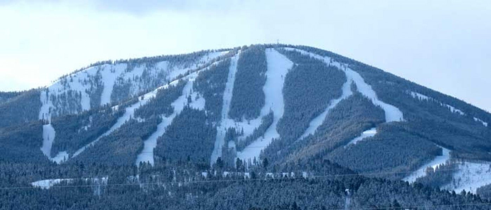

About Discovery
Discovery has three faces. The front face is the perfect blend of gently sloping runs and more advanced groomed cruisers. Off the Granite Chair, things step up a notch with steeper groomed runs and mogul skiing. And the backside? Well, imagine the Chugach without the costly helicopter ride. Point is, we have great terrain and lots of it. No matter what kind of mountain you like, you just discovered it. Discovery also offers a lot of downhill thrills during the summer months at the Discovery Bike Park from June 18th through October. The trails are intermediate to advanced with loads of features for downhill riders to enjoy. You can learn more about the bike park by going here.
Why Discovery
Discovery is best known for their VERY cheap seaon passes, as well as very advanced skiing on the backside. With some of the steepest terrain in Montana, Disco it is known for amazing skiing after a big dump of snow. Discovery is also known for its simple skiing on the front side, providing skiing for all ranges of skier ability.